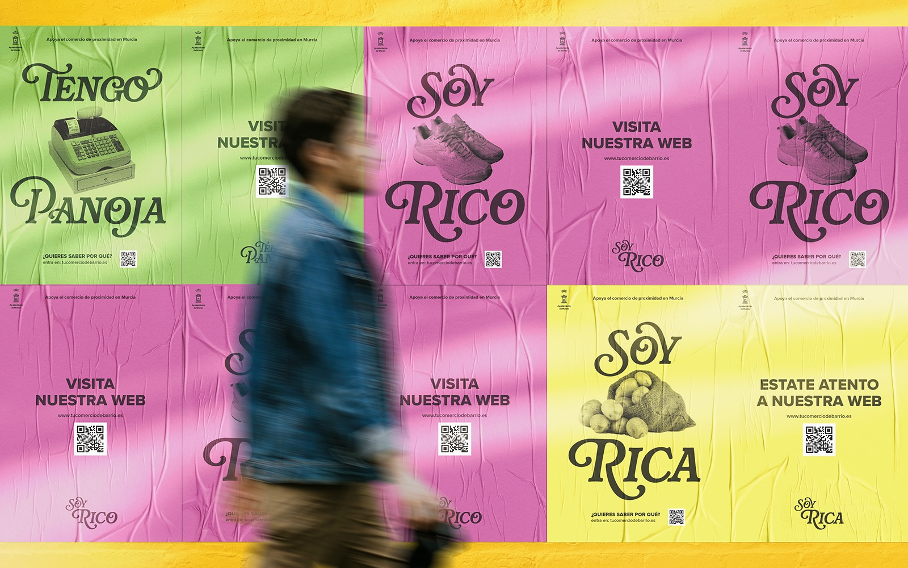

Context
A graphic communication campaign created to encourage traditional, local shopping in Murcia and its outlying districts.
The proposal grows out of the idea of wealth and abundance: helping people realize how truly rich they are for having everything close by. Through humor, irony and Murcian identity, we reinterpret wealth not as something material, but as the everyday abundance that surrounds us in our neighborhoods: the bakery that has always been there, the greengrocer you trust, the hardware store where they know you by name.
Concept: I'm rich because I have everything without leaving my neighborhood.
Project images
